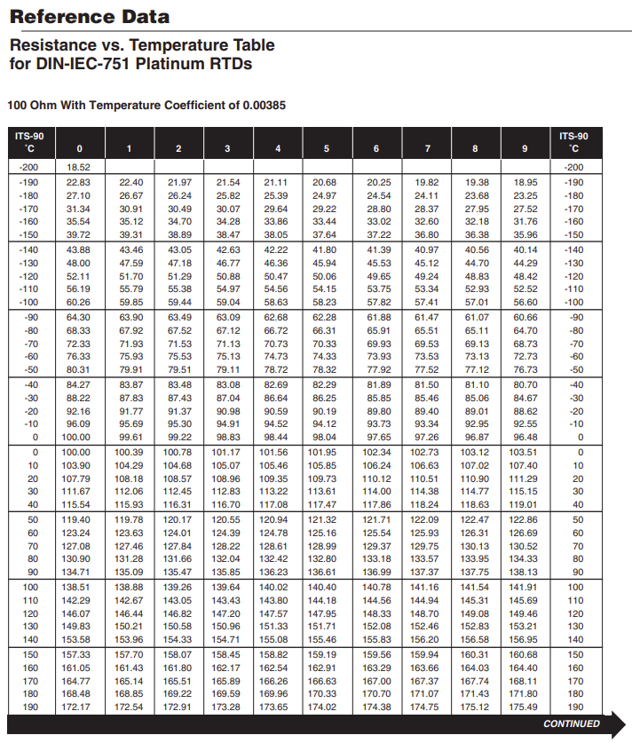

ASSESMENT TASK 3
Team Project
 |
 |
 |
 |
 |
|---|
| |
|
|
|
|
|---|
Testing was thorough throughout development, and always had a pass/fail criteria. Overall, if the app calculated the right temperature, it passed. If it did not for any reason at all, it was considered a failure and needed investigation and troubleshooting.
At every stage of development, we needed to confirm functionality, and confirm the output matched the definitions provided by the current IEC60751 standard. That is, we had an expected value and needed to ensure our output matched once run through the calculation. Every time we changed some part of the programming, we needed to make sure the formula was not damaged.
In order to match our output to the expected value, we needed to isolate values and just run it through the formula. Conveniently we had a tabulated list of resistance vs. temperature as defined by IEC60751. By its definition we knew that 100Ω = 0°C. We also knew 138.51Ω = 100°C. by picking random resistance values, we could input it into the program, run the formula and ensure the output temperature matched the tables.

https://www.watlow.com/-/media/documents/training-and-education/rtd-tables.ashx
By testing frequently, we did indeed discover a fault. The JavaScript maths library does not round in traditional ways and had we not tested thoroughly we would not have realised or been able to correct it.
In addition to testing the formulas integrity, we needed to test the general function of the app. We needed to make sure buttons functioned appropriately and did not lead to mysterious locations, or have unintended consequences. Again, this was performed throughout the development process. Every time a feature was added or changed, it was tested, and pre-existing associated features were tested to ensure there were no programming clashes.
Once the programmers were satisfied, they released the APK so the other members of the team were able to basically try to break it. The rest of the team ran it through its paces, and thankfully were unable to identify faults or unexpected results. In particular, our quality assurance officer spent considerable time working with the programmers to make sure the values were right.